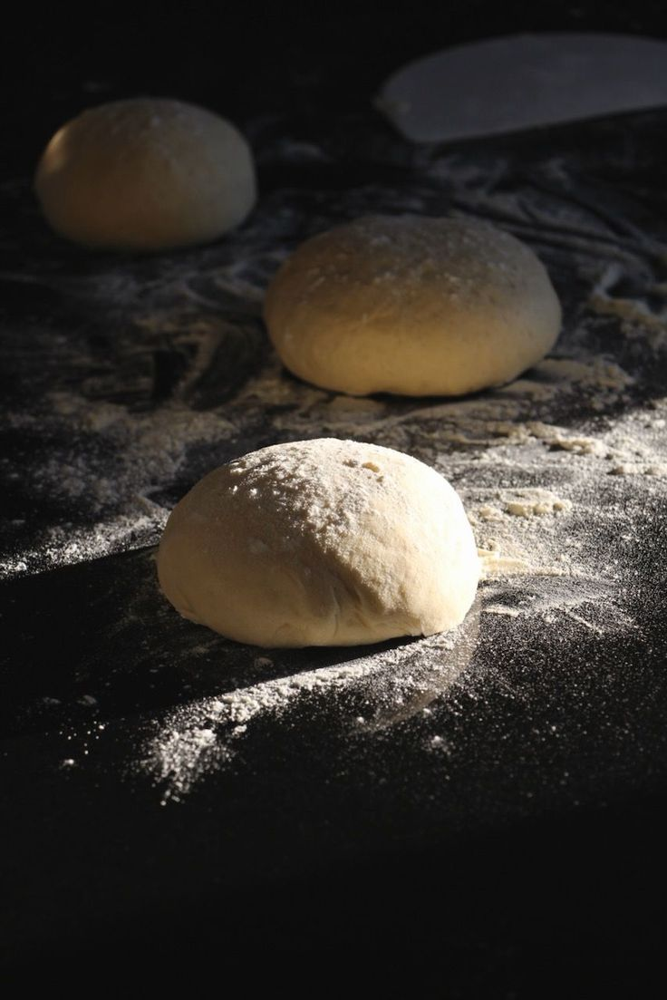

Pizza Dough!

Pizza Dough is just a basic dough for all pizza.
Ingredients
Steps
- Making The Dough: Ideally, the dough, made with just flour, yeast, salt, and water, should be made the night before or in the morning so it has enough time to ferment. Traditionally, Italian 00 flour is used, which is similar to all-purpose flour. The preparation begins with dissolving salt in water, then adding to that yeast and dissolving it. Then, first, a portion of the flour should be added to the water, and then the rest of the flour should be added in batches until you get a smooth, loose dough. If possible, the yeast should not come in contact with salt as it draws out the water killing the yeast in the process, which is why some chefs suggest that yeast is dissolved in flour and not in water. In any case, the contact between yeast and salt should not be longer than five minutes. While the amount of water is always set, the reason why flour is added gradually and why the amount of flour in recipes is not set is because the amount of flour needed depends on humidity, meaning whether the flour on a given day absorbs more or less water. The dough should be kneaded for long until smooth and no longer sticky, about 15-20 minutes, up to 30 minutes, if mixing by hand.
- The Fermentation Of Dough: The dough has to rise two times, for a minimum of 8 hours — the first rise being 2 hours long and a second 6 hours long; however, the second rise can last for up 16 hours, ideally at a 23°C/73°F temperature, or in the refrigerator, equating to a total of 18 hours of fermentation. If the dough is kept in the refrigerator, it should come to room temperature before you start shaping it. Before the second rise, the dough needs to be portioned out into approximately 200 to 280 gram (7-10 oz) balls, depending on the size of the pizza you're making, either a 22-24cm (8.5-9.5-inch) or a 28-35cm (11-13.5-inch) wide one. The balls of dough should be kept covered with a damp cloth, so they do not dry out.